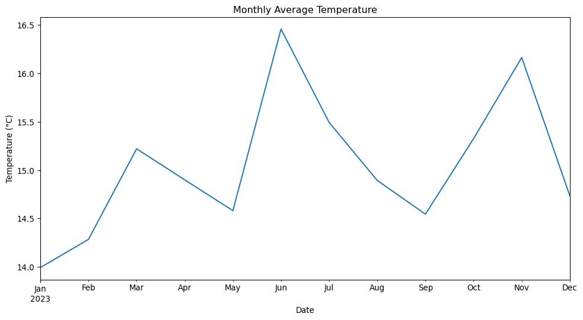

A cartoon panda is visiting Stonehenge.MidJourney 5
Getting Started
Before we begin our interactive session, please follow these steps to set up your Jupyter Notebook:
Open JupyterLab and create a new notebook:
Click on the + button in the top left corner
Select Python 3.10.0 from the Notebook options
Rename your notebook:
Right-click on the Untitled.ipynb tab
Select “Rename”
Name your notebook with the format: Session_XY_Topic.ipynb (Replace X with the day number and Y with the session number)
Add a title cell:
In the first cell of your notebook, change the cell type to “Markdown”
Add the following content (replace the placeholders with the actual information):
# Day X: Session Y - [Session Topic][Link to session webpage]Date: [Current Date]
Add a code cell:
Below the title cell, add a new cell
Ensure it’s set as a “Code” cell
This will be where you start writing your Python code for the session
Throughout the session:
Take notes in Markdown cells
Copy or write code in Code cells
Run cells to test your code
Ask questions if you need clarification
Caution
Remember to save your work frequently by clicking the save icon or using the keyboard shortcut (Ctrl+S or Cmd+S).
Let’s begin our interactive session!
Introduction
In this interactive session, we’ll explore in more detail to work with dates in pandas, which is a crucial skill for environmental data scientists. We’ll focus on:
Parsing dates
Using dates as an index for a DataFrame
Selecting and filtering data based on date ranges
Hopefully, by the end of this session, you’ll be more comfortable manipulating time series data in pandas.
Setting Up
First, let’s import the necessary libraries and create a sample dataset.
✏️ Try it. Add the cell below to your notebook and run it.
Code
import pandas as pdimport numpy as npimport matplotlib.pyplot as plt# Set a random seed for reproducibilitynp.random.seed(42)# Generate a sample datasetdate_rng = pd.date_range(start='2023-01-01', end='2023-12-31', freq='D')temperature = np.random.normal(loc=15, scale=5, size=len(date_rng))rainfall = np.random.exponential(scale=5, size=len(date_rng))df = pd.DataFrame(data={'date': date_rng, 'temperature': temperature, 'rainfall': rainfall})print(df.head())
%Y: Year with century as a decimal number (e.g., 2023)
%y: Year without century as a zero-padded decimal number (e.g., 23)
%m: Month as a zero-padded decimal number (01-12)
%d: Day of the month as a zero-padded decimal number (01-31)
%H: Hour (24-hour clock) as a zero-padded decimal number (00-23)
%M: Minute as a zero-padded decimal number (00-59)
%S: Second as a zero-padded decimal number (00-59)
%f: Microsecond as a decimal number, zero-padded on the left (000000-999999)
Additional useful codes:
%b: Month as locale’s abbreviated name (e.g., Jan, Feb)
%B: Month as locale’s full name (e.g., January, February)
%a: Weekday as locale’s abbreviated name (e.g., Sun, Mon)
%A: Weekday as locale’s full name (e.g., Sunday, Monday)
%j: Day of the year as a zero-padded decimal number (001-366)
%U: Week number of the year (Sunday as the first day of the week)
%W: Week number of the year (Monday as the first day of the week)
Common combinations:
%Y-%m-%d: ISO date format (e.g., 2023-05-15)
%d/%m/%Y: Common date format in some countries (e.g., 15/05/2023)
%Y-%m-%d %H:%M:%S: ISO date and time format (e.g., 2023-05-15 14:30:00)
Remember, when using these format strings with pandas, you typically use them with functions like pd.to_datetime() or when setting the date_format parameter in read_csv().
Your turn: Try parsing the following dates: ‘2023-07-04 14:30:00’, ‘05/07/2023’, ‘June 6th, 2023’
✏️ Try it. Add a new cell to your notebook and add code to parse the three strings above.
Code
# add your code here!
Using Dates as DataFrame Index
Setting the date column as the index can make time-based operations more intuitive:
✏️ Try it. Add the cell below to your notebook and run it.
Code
# Set 'date' as the indexdf = df.set_index('date')print(df.head())
temperature rainfall
date
2023-01-01 17.483571 1.265410
2023-01-02 14.308678 16.514351
2023-01-03 18.238443 0.061145
2023-01-04 22.615149 17.512635
2023-01-05 13.829233 0.220595
Once the index is set to a datetime, you can use the .loc selector to locate specific data in the dataframe:
✏️ Try it. Add the cell below to your notebook and run it.
Code
# Accessing data for a specific dateprint(df.loc['2023-01-15'])
temperature 6.375411
rainfall 3.030639
Name: 2023-01-15 00:00:00, dtype: float64
Resampling Time Series Data
With dates as the index, we can easily resample our data using the resample command and a resampling interval.
Common Datetime Arguments for resample
'D': Calendar day
'W': Week (Sunday)
'W-MON': Week (Monday)
'ME': Month end
'MS': Month start
'QE': Quarter end
'QS': Quarter start
'YE' or 'AE': Year end
'YS' or 'AS': Year start
'H': Hourly
'T' or 'min': Minutely
'S': Secondly
Note: You can also use multiples, e.g., 2D for every 2 days, 4H for every 4 hours.
Changes in monthly resampling options
The M, ME, and MS options relate to monthly resampling:
M (Deprecated): This used to represent the end of the month. It’s being phased out due to ambiguity.
ME (Month End): This is the direct replacement for M. It explicitly represents the last day of each month. When you resample with ME, the resulting timestamps will be on the last day of each month.
MS (Month Start): This represents the first day of each month. When you resample with MS, the resulting timestamps will be on the first day of each month.
✏️ Try it. Add the cell below to your notebook and run it.
Code
# Resample to monthly averagemonthly_avg = df.resample('ME').mean()print(monthly_avg.head())# Plot monthly average temperatureplt.figure(figsize=(12, 6))monthly_avg['temperature'].plot()plt.title('Monthly Average Temperature')plt.xlabel('Date')plt.ylabel('Temperature (°C)')plt.show()
temperature rainfall
date
2023-01-31 13.992562 6.531653
2023-02-28 14.284158 7.272248
2023-03-31 15.219692 6.984496
2023-04-30 14.898742 4.785105
2023-05-31 14.580927 3.228182

Your turn: Try resampling the data to get weekly maximum rainfall. Plot the results.
Selecting and Filtering by Date Ranges
Pandas makes it easy to select data for specific date ranges. You can use list and array style slicing to get a range of dates from a datetime index.
✏️ Try it. Add the cell below to your notebook and run it.
Code
# Select data for the first quarter of 2023q1_data = df['2023-01-01':'2023-03-31']print(q1_data.head())
temperature rainfall
date
2023-01-01 17.483571 1.265410
2023-01-02 14.308678 16.514351
2023-01-03 18.238443 0.061145
2023-01-04 22.615149 17.512635
2023-01-05 13.829233 0.220595
Datetime objects contain a number of methods and attributes that provide information about them.
Datetime Attributes:
.year: Year of the datetime
.month: Month of the datetime (1-12)
.day: Day of the month
.hour: Hour (0-23)
.minute: Minute (0-59)
.second: Second (0-59)
.weekday(): Day of the week (0-6, where 0 is Monday)
You can use these attributes to easily filter datetime indicies:
✏️ Try it. Add the cell below to your notebook and run it.
temperature rainfall
date
2023-06-01 16.732241 6.896786
2023-06-02 11.599876 1.019898
2023-06-03 16.161268 1.174495
2023-06-04 16.465362 2.313926
2023-06-05 11.428243 3.313313
Useful Datetime Methods:
.date(): Returns the date part of the datetime
.time(): Returns the time part of the datetime
.strftime(format): Converts datetime to string according to given format
.isoformat(): Returns a string representation of the date in ISO 8601 format
More examples of datetime selections:
Code
# Select data for a specific yeardf_2023 = df[df.index.year ==2023]print("Shape of 2023 data:", df_2023.shape)
Shape of 2023 data: (365, 2)
Code
# Select data for a specific monthdf_june = df[df.index.month ==6]print("Shape of June data:", df_june.shape)
Shape of June data: (30, 2)
Code
# Select data for weekdays only (weekdays are zero-indexed!)df_weekdays = df[df.index.weekday <5]print("Shape of weekday data:", df_weekdays.shape)
Shape of weekday data: (260, 2)
Code
# Select data for a specific date rangedf_q2 = df['2023-04-01':'2023-06-30']print("Shape of Q2 data:", df_q2.shape)
Shape of Q2 data: (91, 2)
Code
# Resample to monthly frequencydf_monthly = df.resample('MS').mean()print("Shape of monthly data:", df_monthly.shape)
Shape of monthly data: (12, 2)
Code
# Demonstrate some useful datetime methodsprint("\nFirst date in ISO format:", df.index[0].isoformat())print("Last date formatted:", df.index[-1].strftime('%B %d, %Y'))
First date in ISO format: 2023-01-01T00:00:00
Last date formatted: December 31, 2023
Your turn: Select data for all Mondays in the dataset. Calculate the average temperature for Mondays.
✏️ Try it. Add the cell below to your notebook and write some code to solve the problem above.
Code
# Add your code here!
Key Points
Use pd.to_datetime() to parse dates in various formats.
Setting dates as the DataFrame index enables powerful time-based operations.
Resampling allows you to change the frequency of your time series data.
Pandas provides flexible ways to select and filter data based on date ranges.
[EDS 217 Cheatsheet: Working with Dates in Pandas]
Remember, working with dates and time series is a fundamental skill in environmental data science. Practice these concepts with your own datasets to become proficient! ::: {.center-text .body-text-xl .teal-text} End interactive session 6C :::